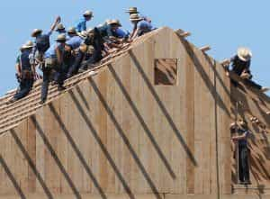

Three months ago, as I was walking by soccer fields in my local sports complex, I saw something that amazed me: two fields were being used by high-school aged Amish and Dutch Mennonite communities that were on a rare trip to the outside world.
Admirably, the young women played on one field while the young men played on the other. Here, there was no sign of an egalitarian, co-ed, genderless safe space. Gender differences were acknowledged and respected.
Even in the scorching summer heat, the girls wore modest squirts, that extended beyond their knees (in the same vein, the young men wore properly-fitting pants and shirts). The young girls also were healthy and fit. They had no tattoos, no piercings, no dyed, half shaven hair. There were no outward signs of brokenness. They were playing with a cordial innocence, the kind you’d expect from teenaged girls who haven’t been tarnished and soiled by consumerism, social media, and postmodern filth. They were beautiful, happy, and innocent.
On the adjacent field, the young men were playing an old-fashioned, no-nonsense game of footy. No whining and certainly no bitching. Every player was getting on with their task with gravitas and determination. The young men were playing with an incredible intensity. They were determined to score, and to win. All forms of masculine virtues were on display.
These scenes were bittersweet
As a first-generation immigrant to the West, I had never witnessed anything like this. Sure, I’ve watched many soccer games. I’ve seen genders segregated. I’ve encountered groups of young men and women, who had not been physically marked by the degenerate ‘edgy’ fads of SJW culture. I’ve even seen modestly dressed women playing sports. But this was the first time I’ve seen all of the above displayed by Canadians of European ancestry.
These scenes were bittersweet. Bitter, because it made me lament and yearn for a day and age when I too can take part in a society with such rich tradition and values. A society where men are not scorned or demeaned, but respected and esteemed. A society where women are not placed on an altar demanding to be worshiped. Here, there was an unerring feeling that these young women admired and even adored these young men.
In a few years short years, these young men will marry these virgin, pure, and chaste young women. Left to the pastoral, traditional setting, where no liberal welfare state exists to pacify the masculine instincts, these men will protect these young women, provide for them, and in return, the women will cherish them and love them for it. The lack of a welfare state also means that these women will seek masculine virtues in their men. In the absence of a ‘generous’ and ‘stable’ state, they will seek a generous and stable husband.
A violent diatribe against the modern West
It was sweet, because this was an enormous vindication. These scenes were a visually violent diatribe against the degenerate, failing, and weak West. Here was a social group that was purposely stuck in time.
After all, for many complex reasons, the Amish and Mennonite communities chose to be insular and rarely change their mode of traditional, pastoral living. Yet while they remain technologically “limited”, their social and group dynamics are superior to those of our modern Western Civilization.

Drawing this into stark perspective, was the third field, that was occupied by a co-ed (i.e. non-segregated) Canadian group of young men and women playing soccer. The women were fat, obnoxious, and foul mouthed. They sported aggressive, masculine tattoos. Meanwhile, the men were weak and effeminate house-pets, almost subjugated and controlled by these vile women. The women were barking orders, and the men would do as they were told, without batting an eye-lash. Such are the rotten fruits that feminism has produced.
The Amish however, rejected influences of the enlightenment, and by extension, all the false doctrines that came after it – Marxism, feminism, postmodernism. And because of that, they can bear the fruits of a superior existence. They are not afflicted by counter-intuitive ideologies that seek to disrupt the natural order of humanity, and create a deep-seated resentment, and fatal division. Instead, they are guided by Christian beliefs that not only bestow on them an abundance of virtue, but also social and group unity and cohesion. Men, women and children know their place in society.
The Amish, an image of the West’s former self
While we can always compare the modern West to pictures and movies of the its past self, why create hypotheticals and possible ‘straw-societies’? We can avoid speculation and introduce certainty into our analysis by drawing comparisons with communities like the Amish and Mennonites that are quite literally stuck in time.
It is true that pastoral Germanic and Dutch traditions of the Amish are not wholly representative of an ever-cosmopolitanizing impulse throughout Europe at the time. However, rural farming communities were still a dominant part of the landscape. These societies strongly resemble the post-reformation, pre-enlightenment state of Western Civilization. They are an incredible snapshot into this bygone era. By extension then, the Amish and Mennonites are an image of the West’s former self.

For these reasons, the Amish and Mennonite societies can be the control group when observing the Western experiment. The modern West, the test-tube that has been relentlessly inculcated with feminism, Marxism and postmodernism, is a decrepit and dying society, that just cannot wait to be conquered and subdued by virile foreign hordes. The control test-tube that has avoided these ideologies, the Amish and Mennonite society, has remained strong, self-sufficient and continues to yield an abundance of life-energy. Its people are self-assured and more alive. They are more human.
The Amish are culturally superior
How do we know the west has socially degenerated beyond recognition? Because it is far inferior to the cultural image of its former self. The Amish are far superior. They’re youth are alive and happy. Our youth are confused, sad and anxious. Their young men are brooding with confidence, testosterone, and masculinity. Ours are doubtful and weak. Their young women are feminine and willing to be led. Ours are aggressive and lack virtue. They’re posterity will inherit great riches, born about by tradition, patriarchy and God-fearing. Ours will inherit doubt and depravity.
Far after the degenerating West collapses into a matriarchal, egalitarian third-world basket-case, barbarian hordes will marvel at Amish and Mennonite communities as outposts of a once-great civilization.
Read more: The Purity Of Non-Western Thinking